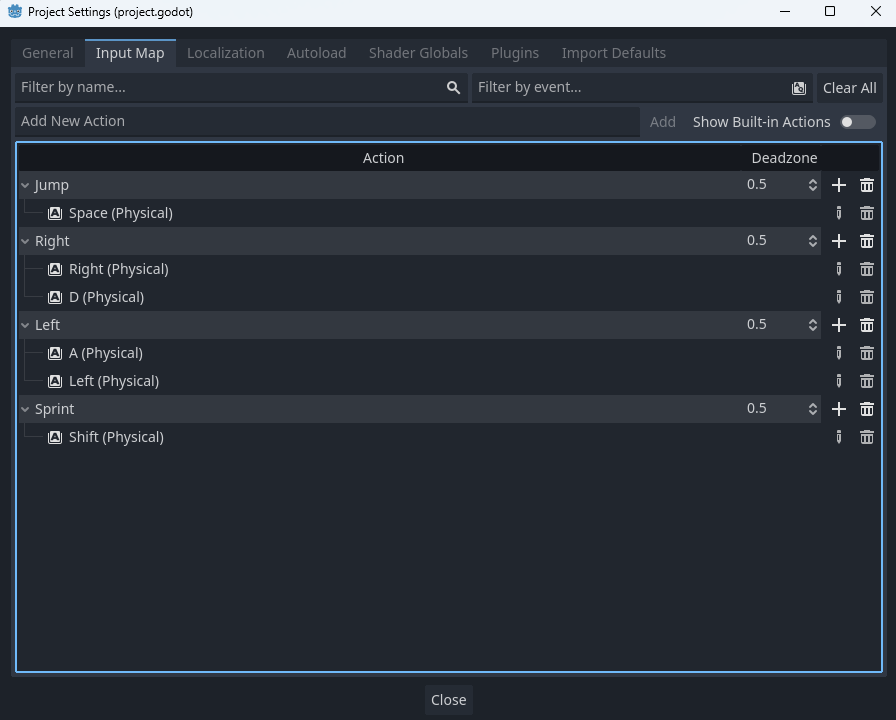

Sprinting
We can add the ability for the player to run when holding a key. Doing so can add more options for the player and frankly is just fun.
Getting the New Assets
Before we can start adding the ability to sprint, we need the new sprites! Go ahead and open up the Sprinting folder in your VGDC-2024 Assets folder, find the appropriate file and drag it into your file system.
If you are not taking this course in person, you can download the assets Here
Now we need to add a new animation to our player's sprite frames. Navigate to your player scene's AnimatedSprite2D then it's sprite frame. Create a new animation called sprint and import the new file as a frame.
Note that the animation speed for sprinting is 12 fps! You can change it but you do want it faster than walking.
Adding the Input
Next we must add a new input action for sprinting. Go to your project settings then the input map tab. Create a new action called Sprint and add a key (I will add shift as my sprint key.)
Editing the Player Script
Now we can finally add the functionality to our player script. First we need two variables: one in our player stats for our sprinting speed, and one in our reference variables to store whether or not the player is sprinting. Our variables should look something like this:
# Player Stats
@export var speed = 100.0
@export var acceleration = 800.0
@export var friction = 1200.0
@export var jump_velocity = -300.0
@export var gravity_scale = 1.0
@export var terminal_velocity = 500.0
@export var sprint_speed = 130.0
# Reference Variables
var gravity = ProjectSettings.get_setting("physics/2d/default_gravity")
@onready var sprite = $AnimatedSprite2D
var sprinting = falseNext, we need to be able to switch between our regular speed and sprint_speed variables based on our input. We can do this by adding a new variable in our apply_acceleration function that replaces the max speed argument of the move_toward method with the proper speed. That should look like this:
func apply_acceleration(input_axis,delta):
sprinting = Input.is_action_pressed("Sprint")
var current_speed = sprint_speed if sprinting else speed
if input_axis:
velocity.x = move_toward(velocity.x, current_speed * input_axis, acceleration * delta)Note that speed was replaced with current_speed in the move_toward method.
Finally, we can add the animations to our update_animations function. Inside of our grounded animations we need to check if sprinting is true, and if so, play the sprint animation instead of walk. That should look like so:
func update_animations(input_axis):
# Grounded Animations
if input_axis:
sprite.flip_h = input_axis < 0
if sprinting:
sprite.play("sprint")
else:
sprite.play("walk")
else:
sprite.play("idle")
# Aerial Animations
if not is_on_floor():
if velocity.y <= 0:
sprite.play("jump")
else:
sprite.play("fall")And we are done! Go ahead and test out your new ability, mess around with the speed and once you are happy with it, move on to another module!
Compatibility
Sprinting conflicts with 1 other module:
Aerial Mobility
If you have any of these modules please follow the instructions for that module:
Aerial Mobility
A relatively minor fix, but in order to make sure that the player's speed is consistent, make sure to update the speed variable to current_speed for both grounded and aerial acceleration. in the apply_acceleration function as shown:
func apply_acceleration(input_axis,delta):
sprinting = Input.is_action_pressed("Sprint")
var current_speed = sprint_speed if sprinting else speed
if input_axis:
if is_on_floor():
# Grounded Acceleration
velocity.x = move_toward(velocity.x, current_speed * input_axis, acceleration * delta)
else:
# Aerial Acceleration
velocity.x = move_toward(velocity.x, current_speed * input_axis, air_acceleration * delta)